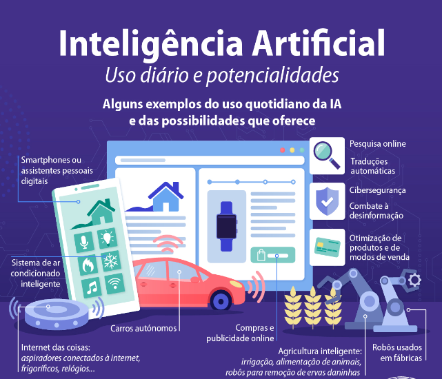

Oque são IA's generativas
As Inteligências Artificiais Generativas são sistemas de
inteligência artificial projetados para criar conteúdo original e
criativo. Essas redes neurais são treinadas em grandes conjuntos de
dados e podem gerar textos, imagens, músicas e até mesmo vídeos. Ao
aprender com padrões e estilos presentes nos dados de treinamento,
as inteligências artificiais generativas podem produzir resultados
realistas e surpreendentes, muitas vezes indistinguíveis de criações
humanas.
Essa tecnologia revolucionária tem aplicações em várias áreas, como
arte, design, entretenimento e até mesmo na criação de assistentes
virtuais mais naturais e interativos. Na área da arte, as
inteligências artificiais generativas podem criar pinturas,
esculturas e composições musicais inéditas, abrindo novas
possibilidades criativas para artistas. No campo do entretenimento,
esses sistemas podem ser usados para gerar personagens de jogos,
cenas cinematográficas e roteiros. Além disso, as inteligências
artificiais generativas também podem auxiliar na criação de
assistentes virtuais mais avançados, capazes de entender e responder
de forma mais natural às necessidades dos usuários.
Como funcionam as IA's generativas
As IA's generativas funcionam através de redes neurais profundas que
aprendem a partir de grandes conjuntos de dados. Elas geram conteúdo
original ao combinar padrões e estilos presentes nos dados de
treinamento, produzindo resultados realistas e criativos em áreas
como arte, música e texto.
Como as IA's generativas podem ser usadas na agricultura

As IA's generativas podem ser utilizadas na agricultura de várias
formas. Uma aplicação é na geração de imagens sintéticas de plantas,
que podem ajudar os agricultores a visualizar o crescimento e
desenvolvimento das culturas em diferentes cenários. Outra aplicação
é na criação de modelos de previsão de colheita, onde as IA's
generativas podem analisar dados históricos, como clima e
sazonalidade, para fornecer estimativas mais precisas sobre o
rendimento das culturas.
Além disso, as IA's generativas também podem ser empregadas na
otimização de sistemas de irrigação, onde podem aprender a controlar
e ajustar automaticamente os níveis de umidade do solo com base nas
necessidades das plantas. Outro exemplo é o uso de IA's generativas
na identificação de doenças e pragas em plantas, permitindo um
diagnóstico mais rápido e preciso, o que ajuda os agricultores a
tomar medidas preventivas e corretivas de forma mais eficiente.
Essas aplicações mostram como as IA's generativas podem trazer
benefícios significativos para a agricultura, ajudando a aumentar a
produtividade, otimizar o uso de recursos e melhorar a tomada de
decisões para os agricultores.